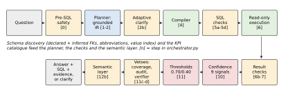
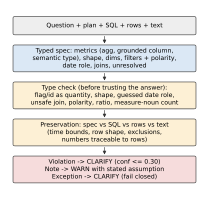
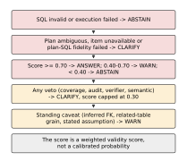
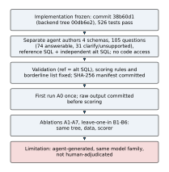
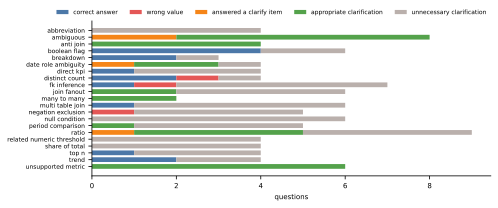
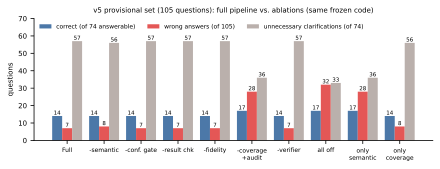
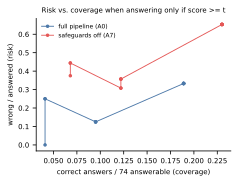

Abstract—Natural-language interfaces to business databases fail most harmfully when a query executes successfully but answers a different question. We describe InsightFlow AI, a conversational business-intelligence pipeline that plans each question into an inspectable intermediate representation, compiles it deterministically to read-only SQL, checks the plan, the SQL, the result and the written answer against the question and the discovered schema, and asks for clarification instead of guessing. We report what these safeguards measurably change. On a new set of 105 questions over four synthetic relational schemas, authored by a separate agent process without access to the implementation and run once against a frozen build, the full pipeline answered 17 of 74 answerable questions, 14 correctly (18.9%, 95% CI 11.6-29.3%), and gave 7 wrong answers among 105 questions; it refused 27 of 31 questions that required clarification or were unsupported. Disabling all six post-generation safeguards on the same build raised wrong answers to 32 and correct answers to 17. Paired ablations attribute almost all of the reduction to mention-coverage and wording checks (24 errors prevented when used alone) and a typed semantic-verification layer (4 alone); a confidence threshold, result-consistency checks, plan-fidelity gating and an answer verifier changed no outcome on this set. The heuristic confidence score was not calibrated: every answer, right or wrong, scored at least 0.979. The safeguards trade coverage for safety, and lexical grounding on unfamiliar schemas is the main limitation. The evaluation questions are agent-generated and not human-adjudicated.
Index Terms—natural-language interfaces to databases, text-to-SQL, semantic verification, selective answering, clarification, business intelligence
Text-to-SQL systems are usually evaluated by whether the generated query returns the reference result [1], [2]. For a business user the more damaging failure is different: a query that runs, returns a plausible number, and silently answers another question, for example by summing a 0/1 flag as if it were money, joining a one-to-many table and double counting, applying an exclusion with the wrong polarity, or picking one of two date columns without saying so. A system that cannot answer should say so; a system that answers should be right.
InsightFlow AI is an inspectable pipeline built around that requirement. It combines deterministic query planning over the discovered schema, explicit semantic checks, evidence-linked responses, a confidence-aware decision rule and clarification behaviour. None of these components is new on its own; the contribution of this paper is an honest measurement of what they buy.
Contributions: (i) a description of the pipeline and of a typed semantic-verification layer that compares the question, the plan, the SQL, the rows and the written answer; (ii) a frozen first-run evaluation on 105 new questions over four unfamiliar schemas with a pre-registered scoring protocol; (iii) single-component and leave-one-in ablations that attribute each prevented error to a safeguard; (iv) an analysis showing that the heuristic confidence score does not separate right from wrong answers; and (v) a clear separation of development, post-hoc and first-run evidence.
Cross-domain text-to-SQL benchmarks such as Spider [1] and BIRD [2] score execution or exact-match accuracy and give no credit for declining. Decomposition and prompting methods [3] and constrained decoding [4] improve the rate of valid and correct SQL but do not by themselves decide when not to answer. Ambiguity in text-to-SQL has been studied as a source of multiple valid queries [5]. Selective prediction frames the trade-off between coverage and risk [6], and calibration work shows that model confidence scores often overstate accuracy [7], [8]. InsightFlow AI applies these ideas in a deterministic, schema-grounded pipeline; we do not claim a new model.

A question is first screened for destructive or injection-like requests. The planner binds measures, dimensions, filters, time windows and join paths to the discovered schema and produces an analytical plan (an intermediate representation with 21 intent kinds). Relationships come from declared foreign keys or are inferred only when name evidence, key uniqueness and full value containment agree; a weaker key-suffix tier (e.g. role-prefixed code columns) is used only for text keys with a unique candidate parent, and every inferred relationship is disclosed in the answer. Join paths are classified as safe (many-to-one), fan-out or ambiguous; fan-out attributes may filter through EXISTS semi-joins but never group. When several readings of a question are possible (alternative date columns or join routes), all are executed: identical results are answered with the assumption stated, different results lead to a clarification that shows each value.
The compiler emits SQLite SQL from the plan. Before execution the system checks plan-to-SQL fidelity, SQL structure and dialect, and estimated cost; execution is read-only. After execution, result validation and semantic-fulfilment checks test, for instance, sort order, reconciliation of breakdowns with totals and empty time windows.

Mention coverage tests whether every data value, number, table noun and column phrase in the question is represented in the executed SQL, and whether any content word maps to nothing in the schema; comparative words and flag antonyms count as explained only when the plan applied the corresponding filter. A wording audit compares the aggregation cue, grouping and measure named in the question with the SQL. An answer verifier re-derives totals and checks semi-join equivalence.
The semantic layer builds a typed specification (metric, aggregation, grounded source column and semantic type, requested and produced output shape, dimensions, filters with polarity, date role, joins, unresolved references) and applies type checks (a flag or identifier used as a quantity, scalar versus grouped shape, guessed date role, unsafe join, inverted polarity, a ratio answered as separate sums, a count of a measure noun answered as a row count) and preservation checks (time bounds, row shape, exclusions, numbers in the answer traceable to rows). A violation forces a clarification; an exception in the verifier also forces a clarification (fail closed).

Nine signals (SQL validity, schema match, KPI match, context consistency, data completeness, evidence strength, result consistency, intent coverage, plan fidelity) are combined into a weighted score, capped by coverage and fidelity. Scores of at least 0.70 answer, 0.40-0.70 answer with a warning, and lower scores abstain. Any veto caps the score at 0.30 and returns a clarification. The score is a validity heuristic, not a probability; Section VIII tests whether it behaves like one.

Evidence comes in five categories that are never pooled (Table I). Development regression tests (526 backend tests at the frozen commit) were written during implementation. Earlier sealed sets were authored by the developer agent with sealed reference SQL and run once before inspection; K1 is the most recent such first run, and K3 is a later post-hoc run on the same questions after fixes. The new v5 set is the main evidence of this paper.
For v5, the implementation was frozen (commit 38b60d1) after the full backend suite passed. A separate agent process, instructed not to read the implementation, documentation, results or earlier question sets, created four synthetic SQLite schemas (hotel bookings, insurance claims, energy billing, ride-hailing) with abbreviated columns, 0/1 flags with positive and good-state names, real NULLs, two or three date columns per fact table, undeclared and role-playing foreign keys, one-to-many child tables, zero-activity lookup members and unusual values. It wrote 105 questions (74 answerable, 19 requiring clarification, 12 unsupported) covering 21 categories, each with reference SQL, an independently written alternative SQL that must return the same result, metric and grain definitions, join assumptions, ambiguity notes and provenance. The developer re-ran the author's validation, fixed the scoring rules (including a list of 20 items the author considered borderline, used only for a sensitivity analysis) and committed a SHA-256 manifest before the first execution. The frozen build was run once; the raw output was committed before scoring. No label was changed afterwards.
Scoring follows the earlier sets: scalars must match to a relative tolerance of 1e-6; breakdowns must have the same labels and values (extra zero rows tolerated); top-N lists must also match in order; for clarification and unsupported items any answer is wrong and a clarification or abstention is correct. Intervals are 95% Wilson score intervals [9].
| Category | Questions | Correct / answerable | Wrong / all |
|---|---|---|---|
| Development tests (frozen build) | 526 tests | 526 pass | - |
| Earlier first runs, developer-authored (5 sets) | 206 | 116/159 | 17/206 |
| K1 first run (round-6 set) | 66 | 42/54 | 2/66 |
| K3 post-hoc on K1 questions | 66 | 49/54 | 0/66 |
| Post-hoc on K1 questions after this work | 66 | 54/54 | 0/66 |
| v5 first run, frozen build (this paper) | 105 | 14/74 | 7/105 |
The five earlier first runs are F1, G1, H1, dev4-R0 and the adversarial set (A0 first); with K1 they are listed individually in the artifact. Post-hoc rows are tuned on the same questions and are not generalization evidence.
| Measure | Value |
|---|---|
| Correct / answerable | 14/74 = 18.9% [11.6, 29.3] |
| Answered / answerable (coverage) | 17/74 = 23.0% |
| Correct / answered answerable | 14/17 = 82.4% [59.0, 93.8] |
| Wrong answers / all | 7/105 = 6.7% [3.3, 13.1] |
| Appropriate refusals (clarify, unsupported) | 15/19, 12/12 |
| Unnecessary clarifications / answerable | 57/74 |
| Latency p50 / p95 | 54 ms / 660 ms |
The full pipeline was cautious: it answered under a quarter of the answerable questions, and most of what it answered was right. It refused all twelve unsupported questions and fifteen of nineteen ambiguous ones. Its seven wrong answers comprise three wrong values on answerable questions (a negated value filter applied with the wrong polarity; a measure phrase that did not bind, so rows were counted instead of an amount being summed; an unrequested extra column appended to a distinct count) and four answers to questions labelled as requiring clarification (a guessed date role, a vague 'doing best' resolved to a default metric, a 'rate' answered as a sum, and an 'average claim' the author marked as borderline). Removing the 20 borderline items gives 14/65 correct and 5/85 wrong answers; the conclusions do not depend on those labels.
Coverage on v5 is far below the earlier developer-authored first runs (e.g. 42/54 on K1). The dominant causes of unnecessary clarification were measure paraphrases the planner could not bind (20 questions, e.g. 'amount claimed', 'kilowatt-hours', 'room nights'), ordinary words flagged by the unexplained-word heuristic (11, e.g. 'break down', 'came from'), unbound dimension words or negative-existence phrasing (11), and column words mentioned but unused (7). Fig. 5 shows outcomes by category.

Each configuration disables safeguards through a research-only switch on the same frozen build, data and scorer; the default build never reads the switch. A1-A6 remove one component, A7 removes all six, and B1-B6 keep exactly one. Paired per-question transitions identify which component changed which outcome.
| Configuration | Correct | Answered | Wrong | Unnec. clar. |
|---|---|---|---|---|
| A0 full | 14 | 17 | 7 | 57 |
| A1 - semantic layer | 14 | 18 | 8 | 56 |
| A2 - confidence gate | 14 | 17 | 7 | 57 |
| A3 - result consistency | 14 | 17 | 7 | 57 |
| A4 - plan fidelity | 14 | 17 | 7 | 57 |
| A5 - coverage + wording audit | 17 | 38 | 28 | 36 |
| A6 - answer verifier | 14 | 17 | 7 | 57 |
| A7 all six off | 17 | 41 | 32 | 33 |
| B1 semantic layer only | 17 | 38 | 28 | 36 |
| B5 coverage + audit only | 14 | 18 | 8 | 56 |

Removing the coverage and wording checks (A5) turned 21 refusals into wrong answers and 3 into correct answers. Used alone (B5) they prevented 24 of the 32 errors seen with everything disabled, at a cost of 3 correct answers. The semantic layer prevented 4 errors when used alone (B1) and 1 beyond the other checks (A1), without losing a correct answer. The confidence threshold, result-consistency checks, plan-fidelity gate and answer verifier changed no outcome in any configuration. This does not show that they are useless, since unit tests exercise them on constructed failures, but this question set did not trigger them. A5 removes two checks that share one pipeline stage and is therefore confounded between them.
Every answer the system gave, correct or not, scored at least 0.979; all seven errors of the full pipeline and all 32 errors with safeguards disabled are high-confidence errors. Accuracy among answered questions was 0.667 (full) and 0.347 (safeguards off) against a mean score near 0.985, giving expected calibration errors of 0.32 and 0.64 [8]. The area under the ROC curve for separating correct from wrong answers was 0.67 and 0.69; the weak separation reflects answer shape (scalar answers receive 0.979, reconciled breakdowns 0.99-1.0) rather than correctness. Thresholding the score (Fig. 7) can trade coverage for risk, but a useful operating point would have to be chosen on held-out data; the existing thresholds of 0.70 and 0.40 never bind on this set. Safety in InsightFlow AI comes from the vetoes, which override the decision, not from the score.

The measurements support a modest claim: explicit checks that compare the question with the executed query remove most silent errors of a deterministic planner on unfamiliar schemas, at a large cost in coverage. They do not support claims of high accuracy, calibrated confidence or general robustness.
InsightFlow AI shows that a deterministic, inspectable pipeline can make its own failures visible: on new schemas it declined most questions it could not ground and kept wrong answers to 7 of 105, against 32 of 105 without its checks. The checks that mattered compare the user's words with the executed query; the confidence score did not. Improving grounding without loosening those checks, and evaluating on independently authored and human-adjudicated questions, are the next steps.
AI-assistance disclosure (required by many venues; check the target venue's policy): the implementation changes, the evaluation questions and this manuscript draft were produced with an AI coding agent; the authors must review, verify and take responsibility for all content before submission.